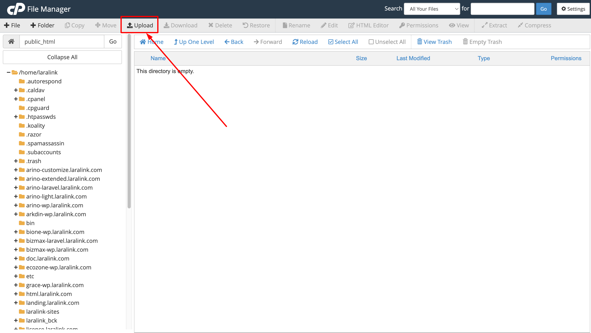
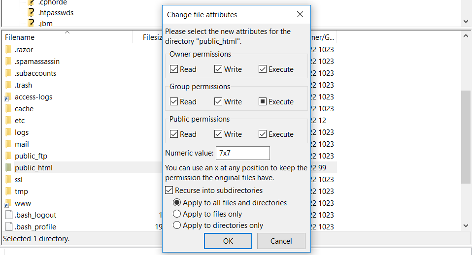
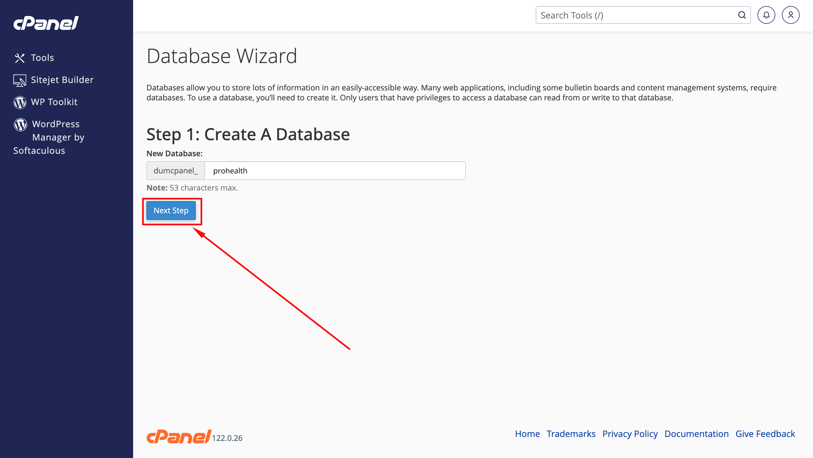
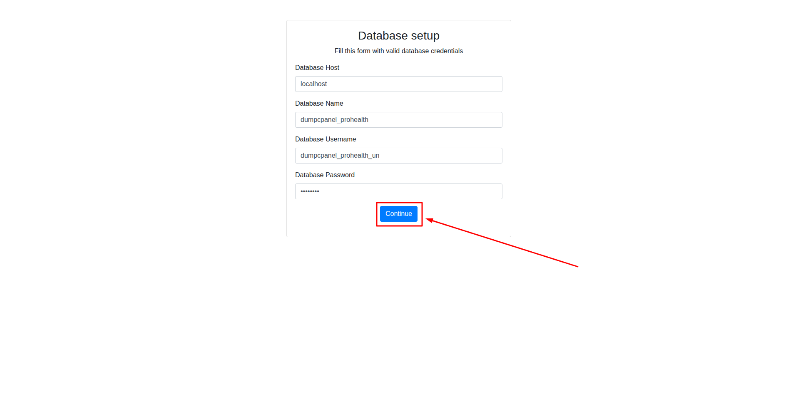

ProHealth - Medical and Healthcare Laravel CMS With Live Page Builder
- Item Name : ProHealth - Medical and Healthcare Laravel CMS With Live Page Builder
- Created: 19 May 2025
- Item Version : v 1.0
- Author : Laralink
- Contact Email: laralink007@gmail.com
-
Demo URL: https://prohealth-laravel.laralink.com/
Admin Panel: https://prohealth-laravel.laralink.com/admin
Admin Username: admin@example.com
Admin Password: 12345678
User Panel: https://prohealth-laravel.laralink.com/user
User Username: user@example.com
User Password: 12345678
First of all, Thank you so much for purchasing this script and for
being my loyal customer. You are awesome!
You are entitled to get free lifetime updates to this product +
exceptional support from the author directly.
This documentation is to help you regarding each step of Installation & customization.
Please go through the documentation carefully to understand how this script is made and how to edit this properly.
If you are unable to find your answer here in our documentation, we encourage you to contact our support: laralink007@gmail.com
Author, Laralink
Server Requirements
Before install and run "Prohealth" application, you need to ensure that your server meets the following requirements:
- Web Server:
- Apache (with mod_rewrite enabled) or Nginx.
- PHP Version:
- PHP 8.2 or higher
- Required PHP extensions:
- OpenSSL
- PDO
- Mbstring
- XML
- Ctype
- JSON
- BCMath
- Database:
- MySQL 5.7+
Recommended Server Configuration for Prohealth
While the above requirements are the minimum, it's recommended to use a server configuration that is suitable for production use with the "Prohealth" application. You can consider the following:
- Web Server: Use Nginx or Apache with proper configuration for security and performance.
- Database: Opt for a dedicated database server, and configure it for optimal performance.
- PHP: Use the latest stable version of PHP and fine-tune the PHP settings for the "Prohealth" application's needs.
- Security: Implement security best practices, such as firewalls, SSL certificates, and regular updates.
- Backups: Set up regular backups of your "Prohealth" application data and server configurations.
Recommended PHP Limits
In a Laravel application like "Prohealth," there are several PHP configuration limits that are recommended for optimal performance and functionality. These limits are set in your server's PHP configuration file (php.ini). Here are the recommended PHP limits for a typical Laravel application:
max_execution_time 180memory_limit 256Mpost_max_size 64Mupload_max_filesize 32Mmax_input_time = 60max_input_vars = 3000
Download From Codecanyon
It’s easy to download. Just follow these steps
- Download the script zip file from your Envato account from Codecanyon.
- Click on 'Files & Documentation. After clicking, the download will start automatically, and you can wait for the complete download process..
- When the download is complete, you need to extract the downloaded zip file. After extracting it, you will find the 'documentation.zip' and 'Prohealth.zip' files.
Migrate project files via Cpanel
Migrate folders and files from zip file Prohealth.zip with Cpanel.
- Access your Cpanel account and login in with your credentials. Then go to File Manager.
- Go to public_html folder.
-
Click on the Upload button.

- Now upload Prohealth.zip file, that you downloaded from Codecanyon. Once the file is successfully uploaded, click on the marked link below.
- Extract the Prohealth.zip file that you uploaded some time ago.
- Your public_html folder must have all these files and folders.
Migrate files using any FTP program (ie. FileZilla) or the webinterface of your webhost
Migrate folders and files from zip file(Prohealth) with any FTP program (ie. FileZilla) or the webinterface of your webhost.
-
Connect to your web server using any FTP program (ie. FileZilla) or the webinterface of your webhost and upload all files and folders which are inside the "Prohealth" folder from the .zip file you have downloaded from Codecanyon and put in the public_html folder.

- The folder "public_html" and it's subfolder must have write permissions, so just give the folder write permissions (777).

Create the database for the application from CPanel.
You can easily create a database and user using the MySQL® Database Wizard. Just follow my steps.
- Create the database using MySQL® Database Wizard, click on the MySQL® Database Wizard.
- Fill the database name and click on the Next Step button. 
- Fill the username and password then click on the Create User button.
- Checked ALL PRIVILEGES and then click on the Next Step button.
- Congratulations! You have successfully configured the database. Please remember the database credentials, as they will be needed when you install the Prohealth script.
After all things ready, now install Prohealth By Installer
It’s easy to install Prohealth. Just follow these steps, they won’t take much of your time.
- Visit Domain (Ex: http://yourwebsite.com.) You will then see an installer widget like the one below, If you already have the database name, username, host, and password, click on the "Start Installation Process"
- Checking file permissions, If all ok then click on "Go To Next Step"
-
Fill the form below with your database credentials and click the "continue" button

- If your database credentials are correct then you will see as below, and then click on "Import SQL" button and wait some moment.
- Please provide your admin account information to access the admin panel. Then click on "Continue" Button.
- Congratulations 🎉🎉 You have successfully completed the installation process. Please Login to continue.
First steps
-
To access the admin panel, please go to the following URL:
https://yourdomain.com/admin. Then enter the admin credentials that you provided during the installation of this script. then hit on the Login button. - After successfully logged in you can see the dashboard like below.
Page Options
Create a New Page
Step 1: Navigate to Pages in your admin sidebar and click Add New Page option.
Step 2: Enter a new title for your page, and then click on the Publish button to publish the page.
Step 2: If you want to add another section to this page, simply click the 'Back' button. At the bottom, you will find the 'Add Section' button. Click it, and then select your desired section from the dropdown menu. After making your selection, click the Add Section button once again. If you want to customize the section, click on its title and proceed with your customization. You can also adjust spacing as needed. Once your customization is complete, don't forget to publish the page.
You can easily organize your page by adding sections, adjusting spacing, deleting options, and reordering sections with a simple drag-and-drop.
Step 3: If you have already added another language from Settings → Language and want to translate this page, it's recommended to first organize your default language page. Once the default language content is complete, switch the language from the top language dropdown, select your desired language for translation, and click "Yes" to initially copy all content from the default language to the selected language. Then, proceed with translating your content.
Similar to creating a new Page, you can create a new Departments, Doctors in the same way, also you can add section like page.
Step 4: To change your homepage to a different page, go to Settings → Page Settings. From the "Select Default Home Page" dropdown, choose the page you want as the default landing page. Similarly, you can also select the Room Details page and the Terms and Conditions page from this section.
Logo,favicon & Site Title
To update the site title, logo, and favicon icon, go to Appearance → Customize → General after changes don't forget to click on Update button
How to Use Icon
Step 1: Go to this link https://icon-sets.iconify.design. You will see a variety of icon sets – choose the one that best fits your needs.
Step 2: After selecting an icon set, choose the specific icons you want to use.
Step 3: A popup will appear; from there, select the React tab and copy the icon value as shown below.
Step 4: Once you’ve copied the icon value, paste it into the input field.
How to Create a New Post
Step 1: Navigate to Posts > Add New in your admin sidebar.
Step 2: Create a title, and insert your post content in the editing field.
Step 3: Add Categories from the right side. Categories is meta information you create for the post. Each category is a meta link that your viewer can click to view similar type of posts. To assign it to the post, check the box next to the Category name. You can also access and edit Categories from the Post sidebar item in your admin sidebar.
Step 4: Add Tags from the right side. Tags is meta information you create for the post. Each tag is a link that your viewer can click to view similar type of posts. Type the name of the tag in the field, separate multiple tags with commas. You can also access and edit Tags from the Post sidebar item in your admin sidebar.
Step 5: To set a featured image for a single image, simply select or drag and drop an image directly onto the Featured Image box.
Step 6: Once you are finished, click Publish to save the post.
Here is the screenshot that shows the various areas of the blog post page:
How to Create a Category
Step 1: Post > Categories > Create New
Step 2: Name the category and fill to other section below.
Step 3: Hit Add New Category. Your new Category will aprear in the table of all category immediately.
Similar to Category, you can create a new Tag in the same way.
Free Support System
All of Laralink’s items
come with 6 months of included support and free lifetime updates for your Script.
Once the 6 months of included support is up, you have the opportunity to extend support
coverage up to 6 or 12 months further.
If you choose to not extend your support, you will still be able to submit bug reports via
email or item comments and still have access to our online documentation knowledge base and video tutorials.
We have an advanced, secure ticket system to handle your requests. Support is limited to questions regarding the script’s features or issues that are related the script. We are not able to provide support for code customizations or third-party plugins. If you need help with anything other than minor customization of your script, we suggest hiring our developer, they will solve everything according to your requirements.
Our Support Mail
All of our items come with free support, and we have a dedicated mail: laralink007@gmail.com to handle your requests. Support is limited to questions regarding the script’s features or problems with the script. We are not able to provide support for code customizations or third-party plugins. If you need help with anything other than minor customizations of your script then you should enlist the help of a developer.
Item Support Includes
- Answering questions about how to use the item
- Answering technical questions about the item
- Help with defects in the item
- Item updates to ensure ongoing compatibility and to resolve security vulnerabilities
Not Included in Item Support
- Script customization and requests that require or involve custom coding
- Installation of the item
- Hosting, server environment, or software
- Support for compatibility with 3rd party plug-ins
- Support for out-dated or modified script
For more information on Item Support Policy please refer to the original document..
Thank you for use this Script.
Once again, thank you so much for purchasing this script. As I said at the beginning, I'd be glad to help you if you have any questions relating to this script. I'll do my best to assist. If you have a more general question relating to the script on Codecanyon, you might consider visiting the forums and asking your question in the "Item Discussion" section.